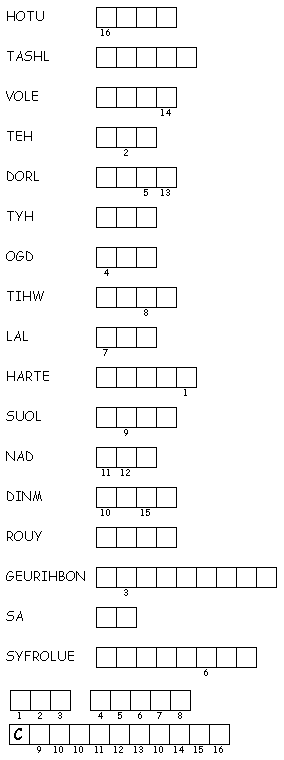

This
week's lessons: Deuteronomy
34:1-12 and Psalm
90:1-6, 13-17 or Leviticus
19:1-2, 15-18 and Psalm
1, 1
Thessalonians 2:1-8 , Matthew
22:34-46
Elementary School Pew-work
P
R O P H E T S N R S V
|
(Matthew 22:37-40 NRSV) He said to him, "'You shall love the Lord your God with all your heart, and with all your soul, and with all your mind.' {38} This is the greatest and first commandment. {39} And a second is like it: 'You shall love your neighbor as yourself.' {40} On these two commandments hang all the law and the prophets." |
Word List |
from http://www.efree.mb.ca/lectionarypuzzles free to distribute for free with this notice. Words are in a straight line left to right or top to bottom |
||
34After Jesus had made the Sadducees look foolish, the Pharisees heard about it and got together. 35One of them was an expert in the Jewish Law. So he tried to test Jesus by asking, 36"Teacher, what is the most important commandment in the Law?" 37Jesus answered:
Love the Lord your God with all your heart, soul, and mind. 38This is the first and most important commandment. 39The second most important commandment is like this one. And it is, "Love others as much as you love yourself." 40All the Law of Moses and the Books of the Prophets [a] are based on these two commandments.
1. Who had Jesus been talking to? ________________________________________________
2. What question did the teacher of the law ask Jesus? _____________________________ ________________________________________________________________________________
3. What did Jesus say was the most important commandment? _____________________ ________________________________________________________________________________
4. What did Jesus say was the second most important commandment? _______________ ________________________________________________________________________________ ________________________________________________________________________________
Questions taken from Sunday School Lessons; http://www.sundayschoollessons.com/baplord.htm
Next week: Joshua 3:7-17 and Psalm 107:1-7, 33-37 or Micah 3:5-12 and Psalm 43, 1 Thessalonians 2:9-13 , Matthew 23:1-12
This week's lessons: Deuteronomy 34:1-12 and Psalm 90:1-6, 13-17 or Leviticus 19:1-2, 15-18 and Psalm 1, 1 Thessalonians 2:1-8 , Matthew 22:34-46
Middle-School Pew-work
|
 Created by Puzzlemaker at DiscoverySchool.com |
34But when the Pharisees had heard that he had put the Sadducees to silence, they were gathered together. 35Then one of them, which was a lawyer, asked him a question, tempting him, and saying, |
37Jesus said unto him, Thou shalt love the Lord thy God with all thy heart, and with all thy soul, and with all thy mind. 38This is the first and great commandment. 39And the second is like unto it, Thou shalt love thy neighbour as thyself. |
|
How do you love God with “all your heart”
-- what do you do, what does it feel like?
_________________________________
_____________________________________________________________________________________________________________________________________________________________________________________________________________________________________________________________________________________________________________________________________________________________________ |
||
Next week: Joshua 3:7-17 and Psalm 107:1-7, 33-37 or Micah 3:5-12 and Psalm 43, 1 Thessalonians 2:9-13 , Matthew 23:1-12